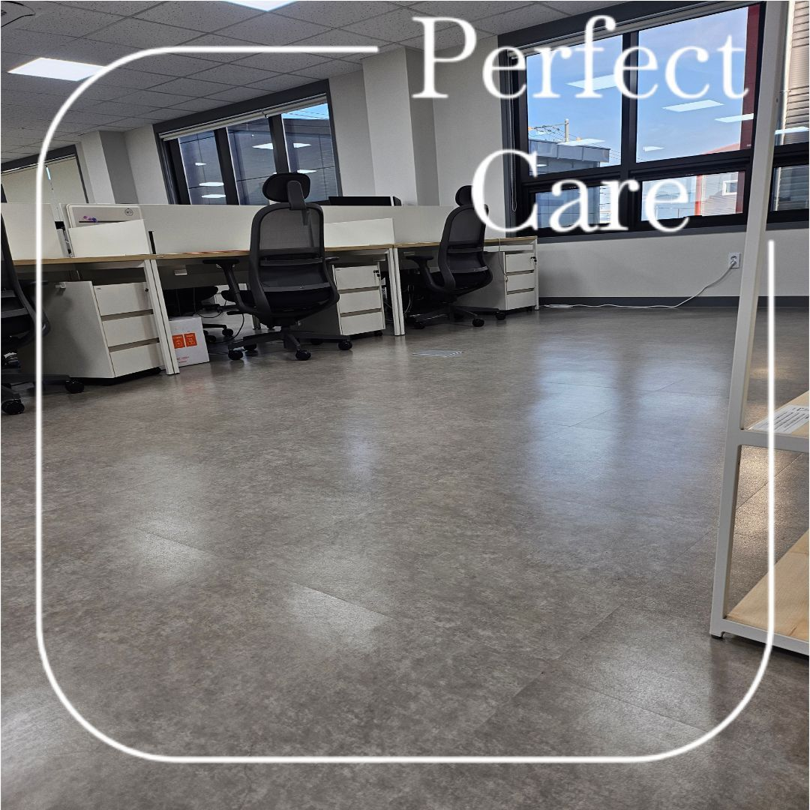
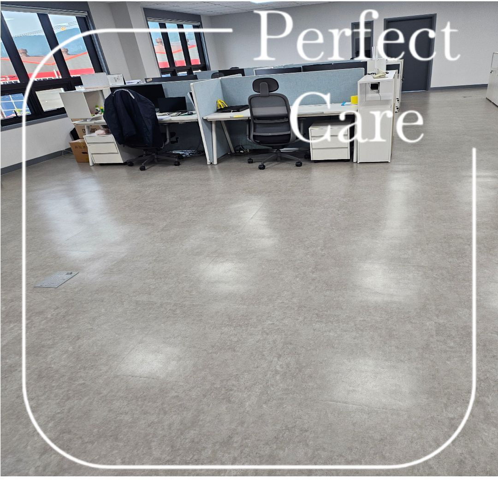
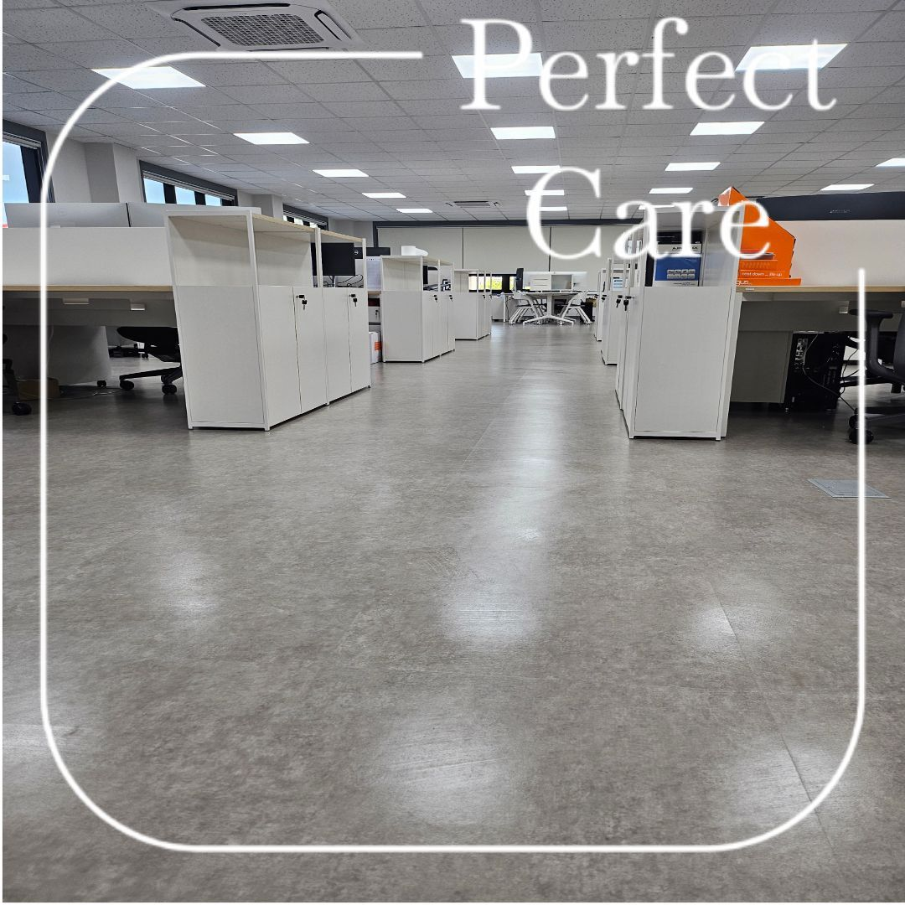
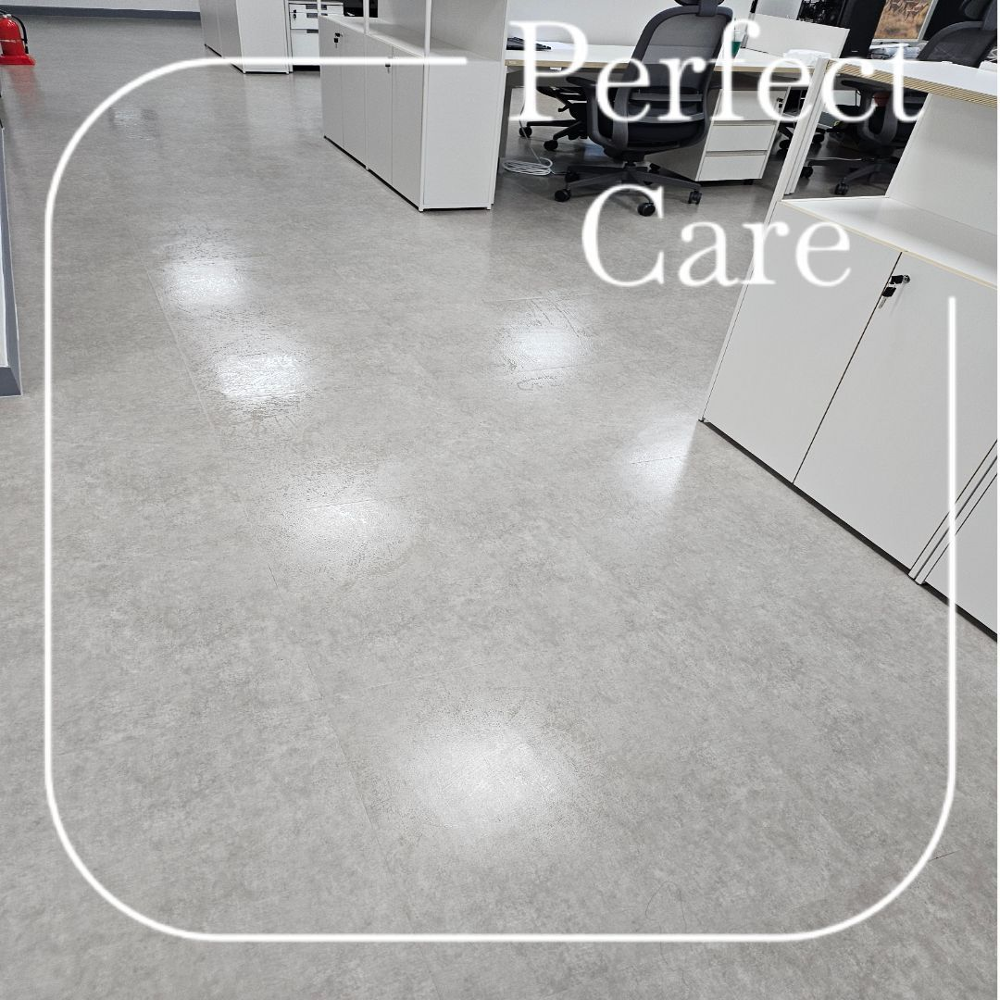
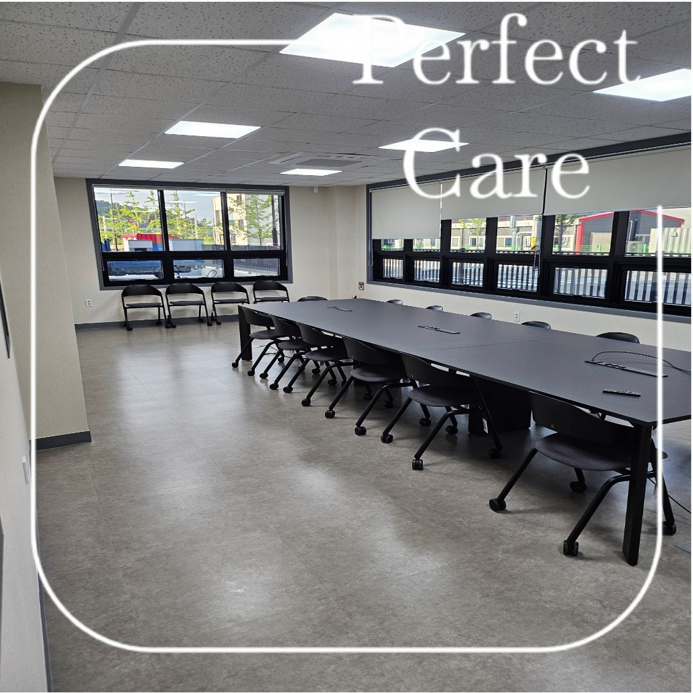
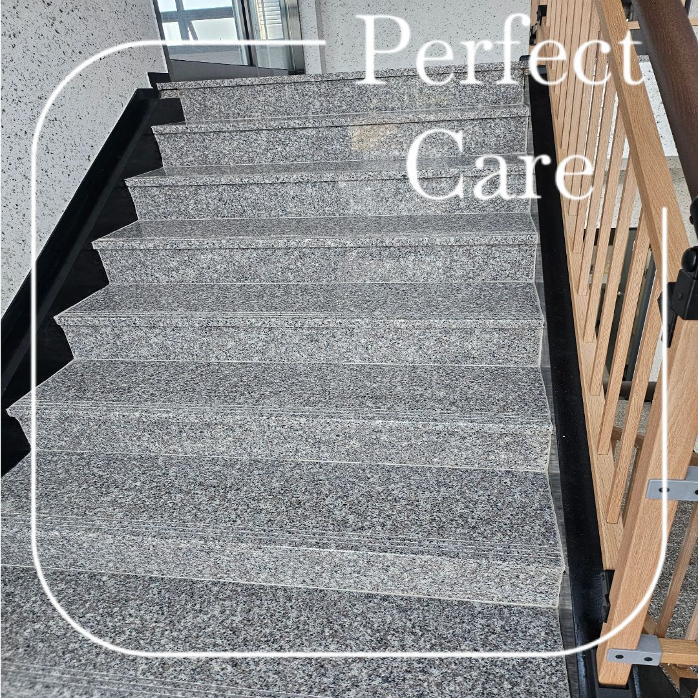
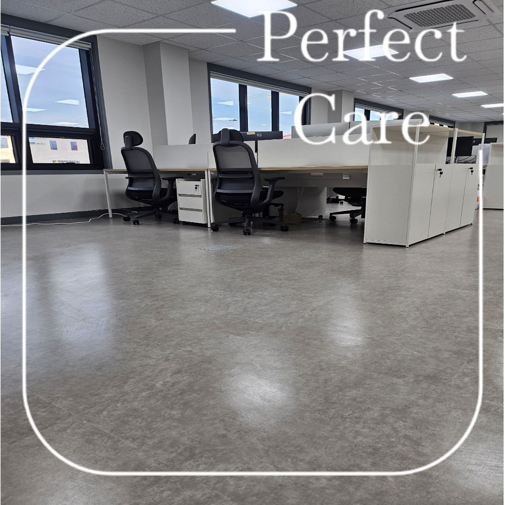
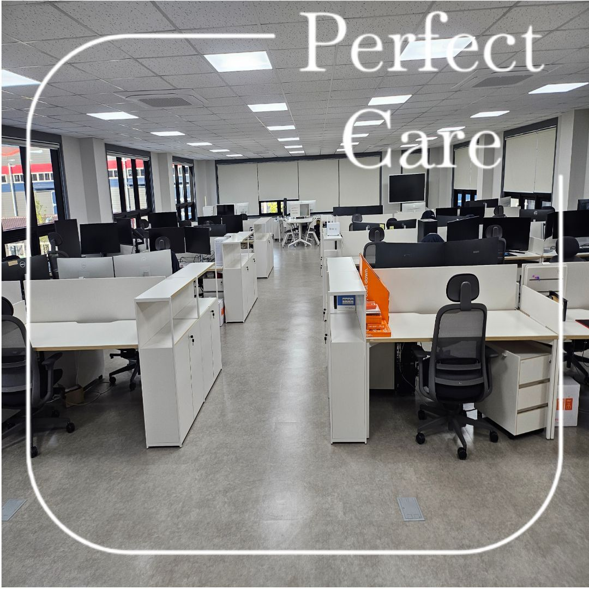

김해 대동산단 기업체 사무실 정기청소
김해 사무실 정기청소는 업무공간만 보는 것이 아니라 출입구, 책상 주변, 통로, 회의실, 계단과 화장실처럼 직원이 반복해서 사용하는 공간을 함께 확인합니다.
이번 사진은 김해 대동산단 기업체 정기청소 현장으로, 넓은 업무공간의 바닥 상태와 공용동선을 중심으로 관리한 사례입니다.

사무실 바닥은 통로와 책상 주변을 나누어 관리합니다



회의실과 공용공간도 이용량에 맞춰 관리합니다
회의실은 의자와 테이블 아래 먼지가 쌓이기 쉽고, 공용통로는 직원 이동이 많아 바닥 오염이 반복됩니다. 사무실 전체를 같은 방식으로 관리하기보다 사용 빈도가 높은 공간을 우선순위로 잡는 것이 효율적입니다.
퍼펙트케어는 주 1회부터 주 6회까지 현장 운영시간과 이용량에 맞춰 정기관리 상담이 가능합니다.

계단과 출입동선까지 한 번에 관리할 수 있습니다
기업체 사무실은 내부 바닥뿐 아니라 계단, 출입구, 복도까지 연결되는 경우가 많습니다. 작업 범위를 미리 나누면 불필요한 작업은 줄이고 실제로 관리가 필요한 공간에 집중할 수 있습니다.

김해 사무실 정기청소 실제 사진


김해 사무실 정기청소 상담 기준
사업장 규모, 직원 수, 방문객 수, 운영시간, 화장실 이용량, 바닥 오염 정도, 관리해야 하는 공간 범위를 함께 확인합니다. 견적 금액은 홈페이지에서 자동 계산하지 않으며 정확한 견적은 무료 방문견적 후 안내합니다.
업무공간
회의실
계단·복도
화장실
김해 사무실 정기청소 무료 방문견적
사무실 규모와 관리주기, 화장실·계단 포함 여부를 현장에서 확인한 뒤 안내드립니다.